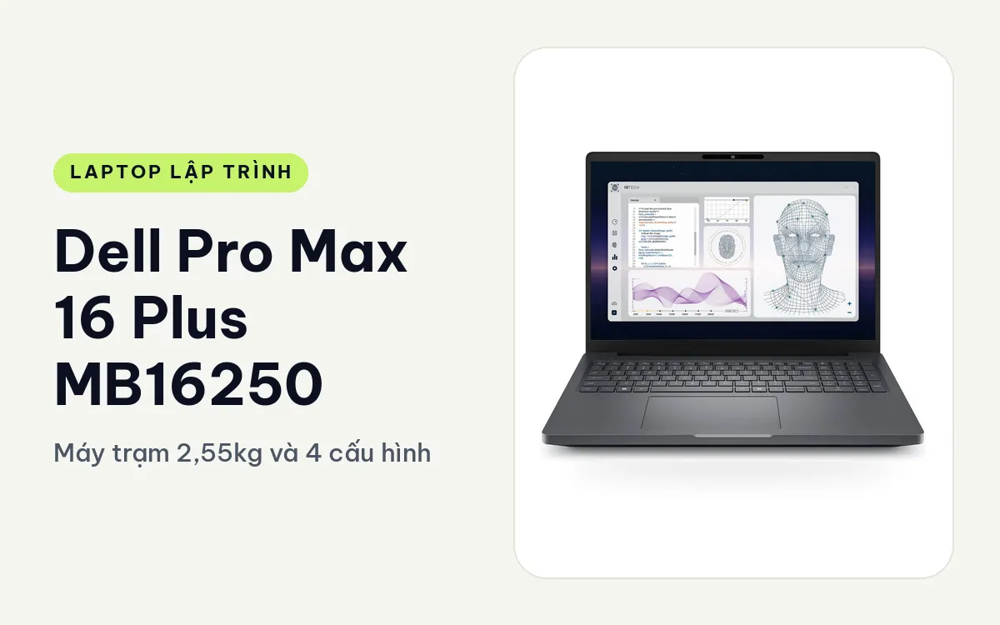
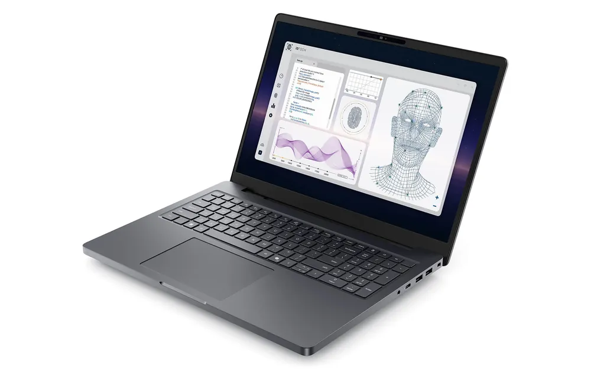
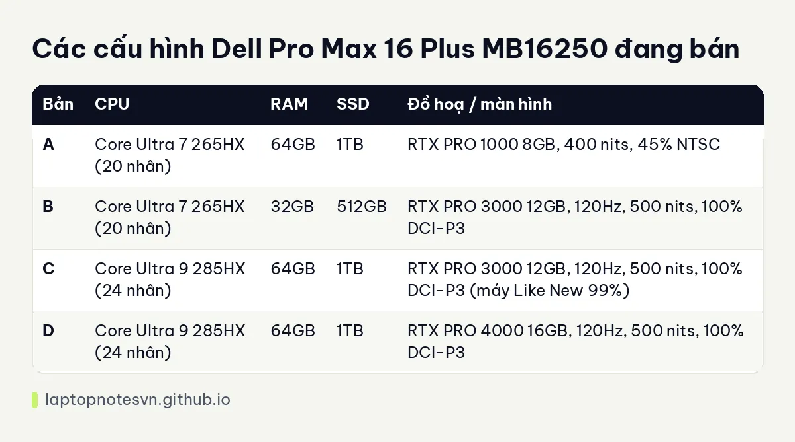

Dell Pro Max 16 Plus MB16250 cho lập trình - Máy trạm 2,55kg và 4 cấu hình

Dell Pro Max 16 Plus MB16250 (2025) là máy trạm di động 16 inch của Dell, dùng chip Intel Core Ultra HX và card RTX PRO thế hệ Blackwell. Đây là loại máy dành cho người viết code mà công việc có phần nặng: huấn luyện mô hình, chạy nhiều container cùng lúc, build dự án lớn hoặc dựng cảnh 3D song song với code.
Cửa hàng đang có 4 cấu hình, chênh nhau chủ yếu ở CPU, dung lượng RAM và card đồ hoạ. Bài này đi qua thiết kế, chuyện mang đi, rồi từng cấu hình hợp với kiểu lập trình nào.
Thiết kế của một chiếc máy trạm
Vỏ máy dùng vật liệu tái chế và vật liệu sinh học, theo mô tả của Dell là nhẹ hơn nhưng vẫn chắc, và đạt chuẩn MIL-STD 810H qua 18 bài thử về va đập, rung, độ ẩm và nhiệt độ. Máy có chứng nhận ISV cho các phần mềm như SolidWorks, CATIA, AutoCAD, điều này quan trọng nếu bạn viết plugin hay công cụ cho nhóm kỹ thuật.
Bàn phím có hành trình phím 1,5mm, đèn nền RGB chỉnh theo vùng và cụm phím số rời đầy đủ. Touchpad rộng 150 x 90mm phủ kính. Cụm phím số hữu ích khi bạn nhập nhiều dữ liệu hoặc làm việc với bảng số, còn dân code web thuần thì có thể thấy bàn phím hơi lệch về bên trái so với màn hình.
Về cổng, bên trái có 2 cổng Thunderbolt 5 và 1 cổng Thunderbolt 4. Bên phải có 2 USB-A 3.2 Gen 1, HDMI 2.1, mạng dây RJ45 2,5GbE, khe thẻ SD và đầu đọc Smart Card. Wi-Fi 7 và Bluetooth 5.4 đi kèm, có tuỳ chọn 5G. Đáy máy có cửa bảo trì nhanh, nên thay RAM hoặc SSD không phải tháo cả vỏ. RAM là loại DDR5 CAMM-2 với 2 khe, tối đa 128GB, và có 2 khe SSD M.2 hỗ trợ RAID 0/1.
Một ghi chú cho người dùng Linux: trang sản phẩm nói card Wi-Fi 7 Intel BE200 chưa có driver chính thức trên kernel trước 6.8. Nếu bạn cài Linux bản cũ, hãy chuẩn bị bộ thu Wi-Fi USB hoặc dùng dây mạng.
Mang đi hằng ngày thì sao
Máy nặng 2,55kg, kích thước 360 x 258,6 x 30,9mm. Con số này đủ để nói thẳng: đây là máy ngồi bàn nhiều hơn mang đi. Bỏ vào balo đi làm mỗi ngày vẫn được, nhưng bạn sẽ thấy rõ sau vài tuần, nhất là khi kèm bộ sạc 130W.

Pin 96Wh, sạc nhanh ExpressCharge 2.0 lên 80% trong khoảng 1 giờ, sạc qua USB-C 130W. Theo trang sản phẩm, dùng code nhẹ và văn phòng cho khoảng 8 đến 10 giờ, dùng GPU rời cho việc nhẹ như thiết kế giao diện còn 4 đến 5 giờ, render nặng liên tục chỉ khoảng 2 đến 3 giờ. Nghĩa là khi train mô hình, máy gần như phải cắm sạc.
Cách dùng hợp lý là để máy ở bàn làm việc chính, nối màn rời qua Thunderbolt 5 và mang đi khi có buổi công tác cần demo tại chỗ. Nếu bạn cần đi lại hằng ngày, hãy xem bài về Dell Pro Max 18 Plus để thấy phía máy còn to hơn, hoặc chọn dòng 14 inch gọn hơn.
Có 4 cấu hình đang bán
Cả 4 bản đều dùng RAM DDR5 6400MHz, SSD PCIe Gen4, màn 16 inch FHD+ (1920 x 1200) IPS không cảm ứng. Khác biệt nằm ở dòng chip HX, dung lượng RAM/SSD và card RTX PRO. Bạn nên cân nhắc thêm lượng RAM bạn cần trước, vì lập trình viên cần bao nhiêu RAM phụ thuộc rất nhiều vào việc có chạy máy ảo và container hay không.

| Bản | CPU | RAM | SSD | Đồ hoạ / màn hình |
|---|---|---|---|---|
| A | Core Ultra 7 265HX (20 nhân) | 64GB | 1TB | RTX PRO 1000 8GB, 400 nits, 45% NTSC |
| B | Core Ultra 7 265HX (20 nhân) | 32GB | 512GB | RTX PRO 3000 12GB, 120Hz, 500 nits, 100% DCI-P3 |
| C | Core Ultra 9 285HX (24 nhân) | 64GB | 1TB | RTX PRO 3000 12GB, 120Hz, 500 nits, 100% DCI-P3 (máy Like New 99%) |
| D | Core Ultra 9 285HX (24 nhân) | 64GB | 1TB | RTX PRO 4000 16GB, 120Hz, 500 nits, 100% DCI-P3 |
Bản A, Core Ultra 7 265HX, 64GB, RTX PRO 1000
Đây là bản rẻ nhất trong nhóm nhưng vẫn giữ 64GB RAM và 1TB SSD, hai thứ quan trọng nhất cho dev backend. Bạn chạy được Docker Compose với database, queue, vài service và một máy ảo mà RAM chưa chạm trần. Card RTX PRO 1000 có 8GB GDDR7, đủ để thử mô hình nhỏ và chạy suy luận thử nghiệm, chưa đủ cho mô hình lớn.
Màn của bản này kém hơn các bản còn lại: 400 nits, 45% NTSC, không ghi 120Hz. Nó ổn cho code, đọc log, nhưng nếu bạn làm frontend cần kiểm màu hoặc làm đồ hoạ thì bản B trở lên hợp hơn.
Bản B, Core Ultra 7 265HX, 32GB, RTX PRO 3000
Bản này cho card mạnh hơn nhưng ít RAM và SSD hơn bản A, nên hợp người ưu tiên GPU. Màn 120Hz phủ 100% DCI-P3 khiến nó dễ chịu cho dev game, dev đồ hoạ thời gian thực hoặc người làm frontend cần màu đúng. RTX PRO 3000 với 12GB giúp bạn chạy thử PyTorch với mô hình cỡ vừa.
Điểm yếu là 32GB RAM và 512GB SSD. Android Studio kèm emulator, Docker và trình duyệt nhiều tab sẽ dùng khá sát. Vì RAM CAMM-2 và SSD M.2 có thể nâng cấp, bạn có thể mua bản này rồi tự mở rộng sau, miễn dùng linh kiện được Dell chứng nhận để giữ bảo hành.
Bản C, Core Ultra 9 285HX, 64GB, RTX PRO 3000
Bản này có 24 nhân, 24 luồng, nên hợp người hay build lớn: biên dịch C++ hoặc Rust cho monorepo, chạy test song song, đóng gói nhiều image Docker. RAM 64GB cho phép chạy cụm Kubernetes nhỏ bằng kind hoặc minikube cùng IDE nặng. Card RTX PRO 3000 12GB đủ cho tinh chỉnh nhỏ và thử mô hình trước khi đẩy lên máy chủ.
Lưu ý bản này ghi tình trạng Like New 99%, không phải máy mới nguyên hộp như ba bản kia. Nếu bạn muốn máy mới hoàn toàn, hãy hỏi cửa hàng trước khi chọn.
Bản D, Core Ultra 9 285HX, 64GB, RTX PRO 4000
Đây là bản cao nhất, GPU 16GB GDDR7 và xung CPU tối đa 5,5GHz. Nó dành cho người làm AI thật sự: huấn luyện và tinh chỉnh mô hình cỡ vừa ngay trên máy, chạy suy luận cục bộ để không phải gửi dữ liệu nhạy cảm lên cloud. Trang sản phẩm cũng nhắc máy tương thích TensorFlow, PyTorch, ONNX Runtime và MATLAB.
Nếu công việc của bạn chủ yếu là web hay backend thông thường, bản này là dư thừa. VRAM 16GB chỉ có ý nghĩa khi bạn có tác vụ GPU thật, và thời gian giao hàng cho cấu hình cao theo trang sản phẩm có thể kéo dài 2 đến 3 tuần.
Nên chọn bản nào
Dev backend, DevOps, người chạy nhiều container: chọn bản A hoặc C vì có 64GB RAM. Dev game, đồ hoạ, frontend cần màu: bản B hoặc C. Người làm học máy và cần VRAM lớn: bản D. Còn nếu bạn chỉ code web một mình trên một máy mang đi, dòng máy này nặng và quá mạnh so với việc cần làm.
Nếu thấy phù hợp, bạn xem cấu hình và tình trạng hàng ở trang Dell Pro Max 16 Plus MB16250.
Đăng ngày 08/11/2026